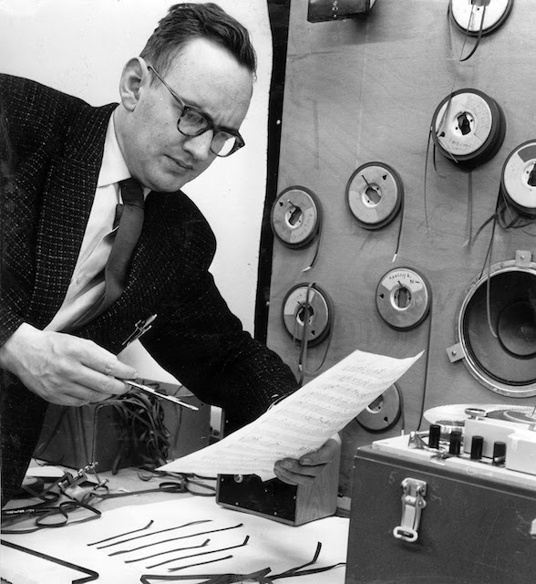

Dick Raaymakers
aka Kid Baltan
 Dick Raaijmakers (also Raaymakers; 1 September 1930 – 4 September 2013) was a Dutch composer, theater maker and theorist. He was known as a pioneer in the field of electronic music and tape music. In addition, he realized numerous music theater pieces, art installations, and has published many theoretical essays.
Dick Raaijmakers (also Raaymakers; 1 September 1930 – 4 September 2013) was a Dutch composer, theater maker and theorist. He was known as a pioneer in the field of electronic music and tape music. In addition, he realized numerous music theater pieces, art installations, and has published many theoretical essays.
Raaymakers was born in Maastricht and studied the piano at the Royal Conservatory of The Hague. From 1954 to 1960 he worked in the field of electro-acoustic research at the NatLab of Royal Philips Electronics Ltd. in Eindhoven. Using the alias Kid Baltan (Dik NatLab reversed), he and Tom Dissevelt  formed Electrosoniks and produced some of the very first electronic pop music. Jean-Jacques Perrey visited them at the time and cited them as an inspiration. While at NatLab, Raaymakers assisted Edgard Varèse with assembling his piece Poème électronique, commissioned by Philips for Expo 58. From 1960 to 1962 he held an appointment as scientific staff member at the University of Utrecht. From 1963 to 1966 he collaborated with Jan Boerman in his own studio for electronic music in the Hague. He was one of the co-founders of STEIM, the STudio for Electro-Instrumental Music. In 1966 he founded the electronic music studio at the Royal Conservatory of the Hague and lectured on electronic and contemporary music until his retirement in 1995. From 1991 he taught music theatre at the Image and Sound Interfaculty at the same conservatory. He died on the third of September, 2013. His archives are preserved at the Netherlands Music Institute.
Raaymakers' oeuvre covers a wide variety of genres and styles, varying from sound animations for films to extremely abstract pulse structures, from "action music" to infinite voice patterns, from electro-acoustic tableaux vivants to extracts of music theatre. He is considered as someone who combines disciplines such as visual art, film, literature and theatre with the world of music. Raaymakers has created numerous electronic compositions, "instructional pieces" for string ensembles, phono-kinetic objects, "graphic methods" for tractor and bicycle, "operations" for tape, film, theatre, percussion ensemble, museum and performance, artworks for offices and conservatory, and many soundscape compositions and music theatre productions, including some for the Holland Festival and for theatre company Hollandia. His theoretical essays are evidence of his profound interest in special inter-media connections. For instance, in his latest publication Cahier M (2000) Raaymakers elaborated upon the connections he saw between the 19th-century French physiologist Étienne-Jules Marey, composer Pierre Boulez, architect Iannis Xenakis and the musical views of Piet Mondrian. One of his most important books is The Method (1985), in which he describes in an exact but also poetic way how motion, cause and effect and their perception are interrelated.
 Raaymakers received several awards for his contribution to the development of visual arts and music in the Netherlands: in 1992 from the Foundation for Lifetime Achievement Awards for Visual Arts, Design and Architecture (BKBV), in 1985 and 1994 the Matthijs Vermeulen Award and in 1995 the Ouborg Award for his lifetime achievements from the City of The Hague. In late 1995 the biennial "Festival in de Branding" was dedicated exclusively to Raaymakers' musical and visual work. The 2014-2015 season of the festival will once again be dedicated to him. In 2004 he received a lifetime achievement award from the Johan Wagenaar Foundation and an honorary doctorate from the University of Leiden. In November 2011 Raaymakers received the Witteveen+Bos Award for Art+Technology for his entire oeuvre.
Raaymakers received several awards for his contribution to the development of visual arts and music in the Netherlands: in 1992 from the Foundation for Lifetime Achievement Awards for Visual Arts, Design and Architecture (BKBV), in 1985 and 1994 the Matthijs Vermeulen Award and in 1995 the Ouborg Award for his lifetime achievements from the City of The Hague. In late 1995 the biennial "Festival in de Branding" was dedicated exclusively to Raaymakers' musical and visual work. The 2014-2015 season of the festival will once again be dedicated to him. In 2004 he received a lifetime achievement award from the Johan Wagenaar Foundation and an honorary doctorate from the University of Leiden. In November 2011 Raaymakers received the Witteveen+Bos Award for Art+Technology for his entire oeuvre.